Real ChatGPT Codex + Blender outputs. These images and AI reports document execution and remaining discrepancies. Mesh hash changes establish geometry edits; they do not establish aesthetic improvement, measured accuracy or photorealism.
One revision cycle; stopped at the configured iteration limit with discrepancies remaining. Run report · Shared state snapshot
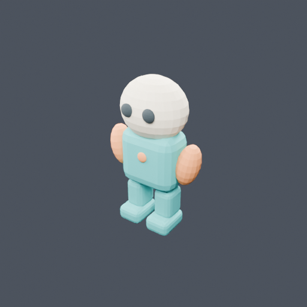
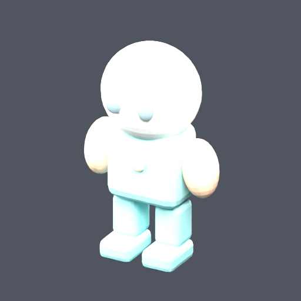
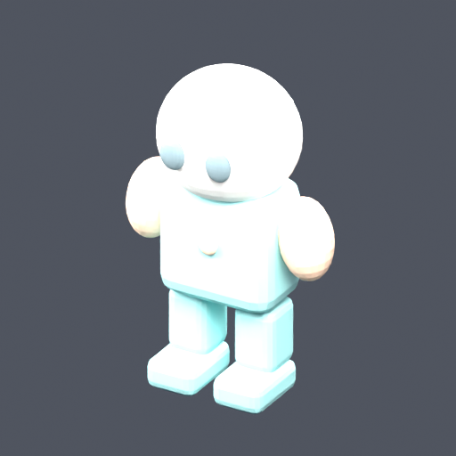
One real geometry revision; stopped at the cycle cap, with body topology preserved and final human review pending. The live loop exposed a camera alignment defect that was corrected and tested separately below. Run report · Shared state
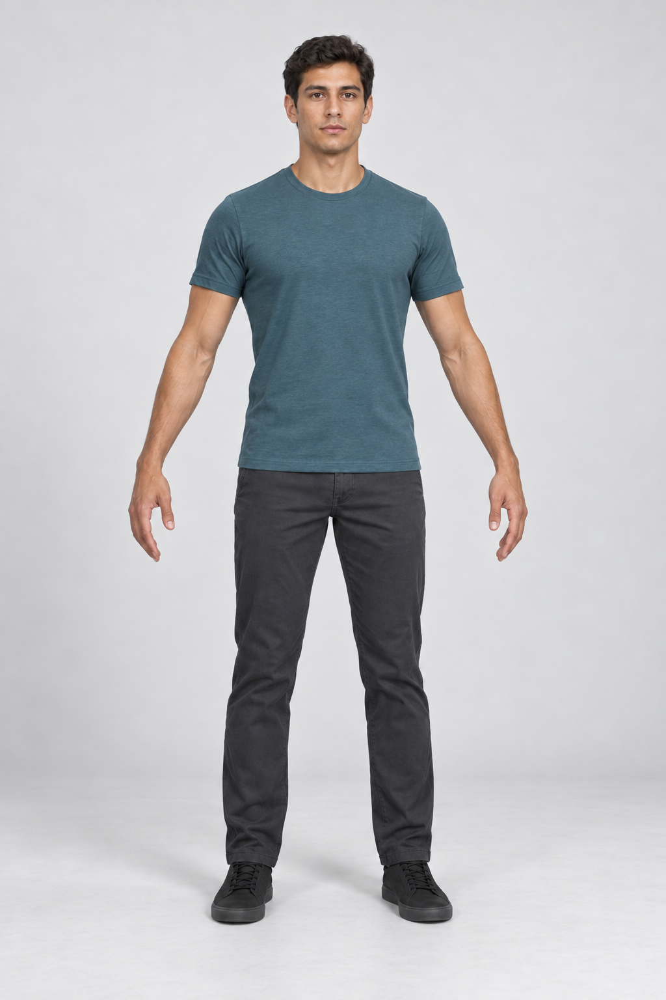
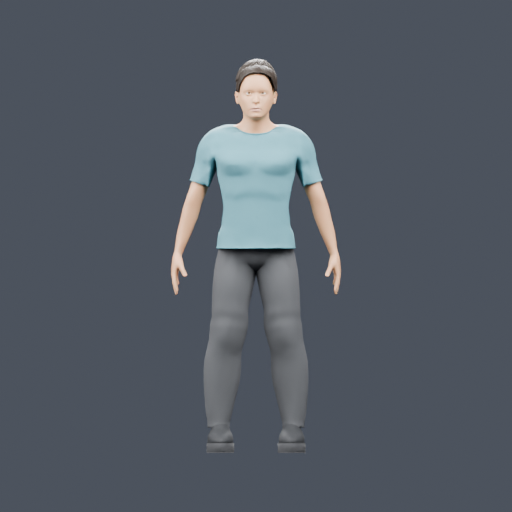
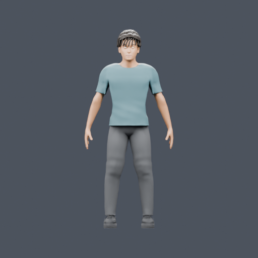
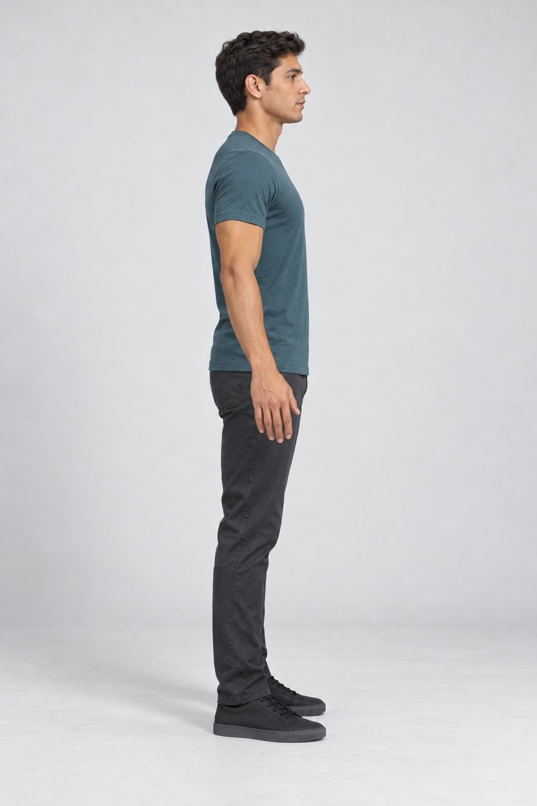
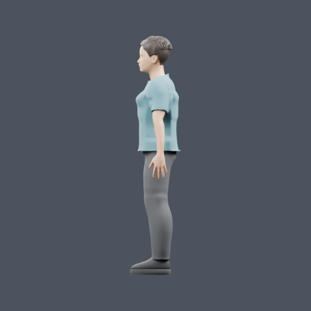
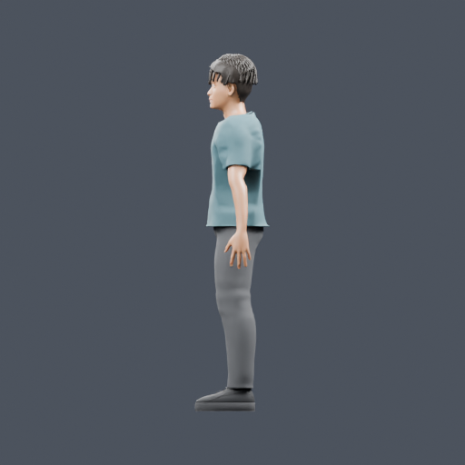
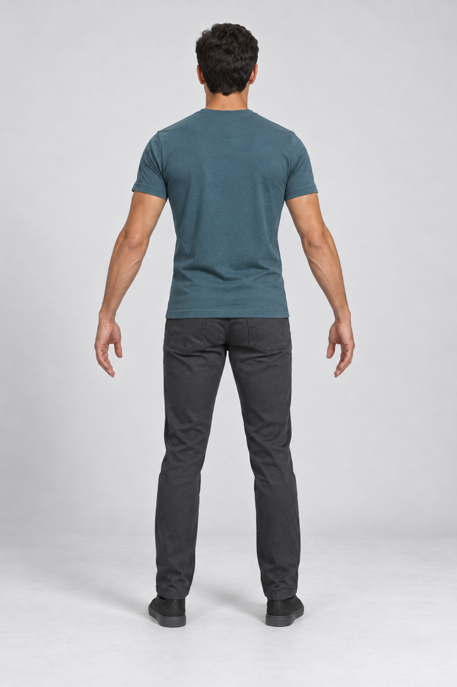
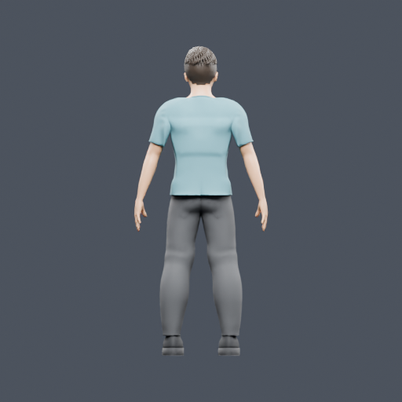
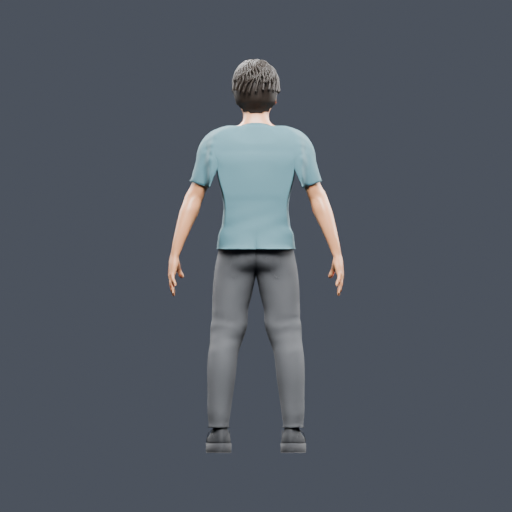
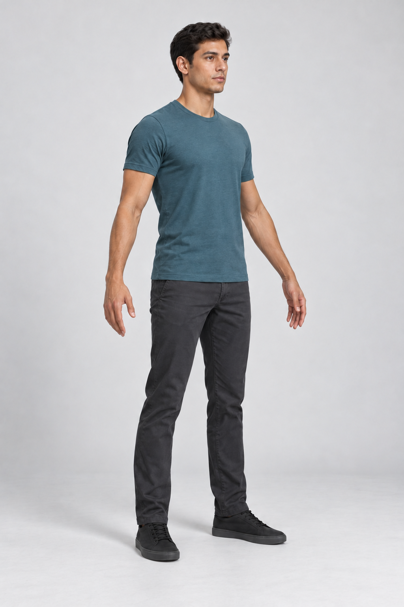
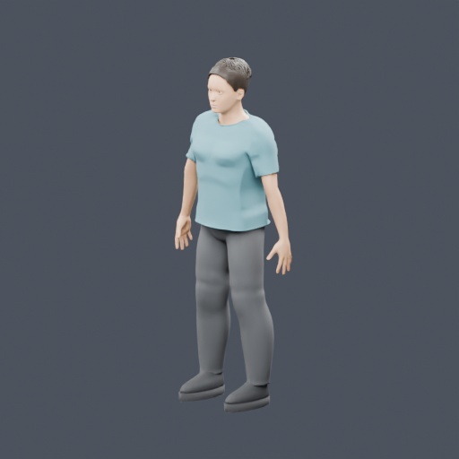
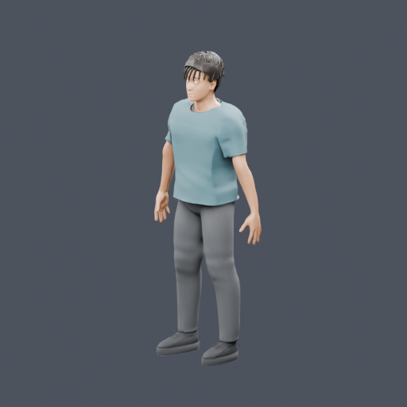
Initial report · Executed instructions · Fresh comparison · Revised scene · Revised GLB
The validation agent selected directions after inspecting the original references. Missing required directions failed explicitly. All four directions were then honored, with the original mesh hash unchanged. A fresh Codex comparison judged directions broadly correct while still finding visible model discrepancies. This renderer check is separate from the earlier MPFB refinement trial. Follow-up report
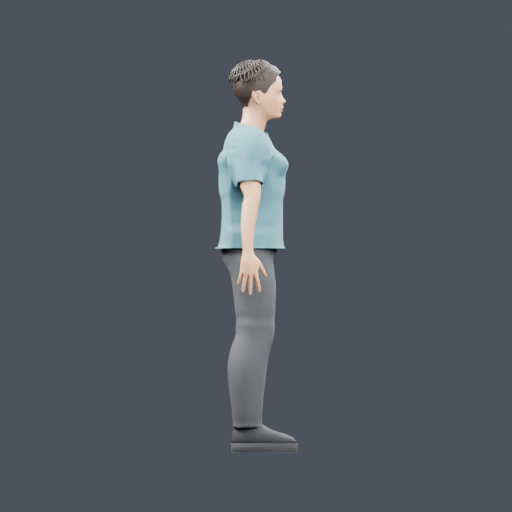
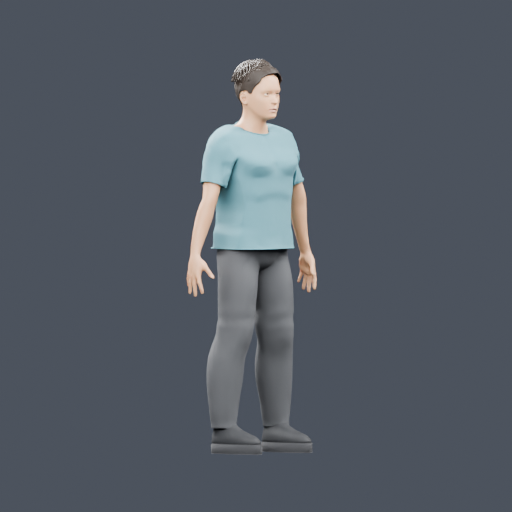